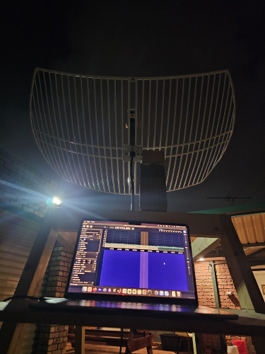

Blog Posts
Upgraded Frame
Posted on 21 Nov, 2024
The retractable wheels degraded overtime and only caused more issues than resolved. They have been replaced with permanent wheels at each corner of the frames square base. The dish has been fixed onto the top by a plank of wood attached by a hinge, this allows some movement to control the angle in which the dish is pointed to the sky. I have also included a small board to use as a laptop holder and it keeps everything nice and snug.

Attempts to measure any signals from overhead satellites have all failed. In fact, investigating the SDR software it seems that the signals recieved from the antenna are indifferent whether it is plugged in or not. It appears there is a faulty connection somewhere that is causing my signals to get lost, I will need to resolve this before moving on to any further design altercations or attempts at satellite signal recievals.

First Build
Posted on 15 Feb, 2024
First frame built and it has retractable wheels that allow the whole dish to be moved to a specific place and then placed down securely. Still need to build the mechanisms and structures for the tilting and rotation motors in a later iteration.